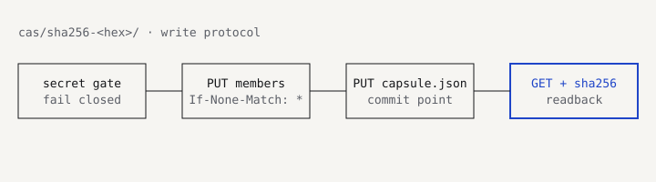

Open risk
| Class | Path | Reason | Source |
|---|---|---|---|
| R2 | pkg/ | Signing path changed; 3 packages depend on it | Transcript line 41 |
Unmet intent
| ID | Criterion | State |
|---|---|---|
| [M1-2] | A fake that corrupts a stored member makes get fail | FAIL |
Missing proof
| Commit | Subject | Missing |
|---|---|---|
| f44bf9640d67 | docs: fix typo in capsule help | Chimera-Intent, Chimera-Capsule |
Verdicts
| ID | Criterion | State | Evidence |
|---|---|---|---|
| [M1-2] | Corrupted member makes get fail | FAIL | Transcript line 88 |
| [M1-2] | Two concurrent pushes write once | PASS | Transcript line 63 |
| [M1-2] | Secret in transcript aborts before any request | PASS | Transcript line 70 |
| [M1-1] | Lint output never contains the matched term | PASS | Transcript line 12 |
| [M1-1] | Unreadable denylist fails closed | PASS | Transcript line 19 |
Media

Commits
| Commit | Subject | Capsule | Intent |
|---|---|---|---|
| 79dea158d058 | lint: add tenant-leak scanner | bd960c743e45 | folio:b89a5f9dd603 |
| 4db3da601999 | capsule: write-once push with readback | 70884302727c | folio:b89a5f9dd603 |
| f44bf9640d67 | docs: fix typo in capsule help | — | — |